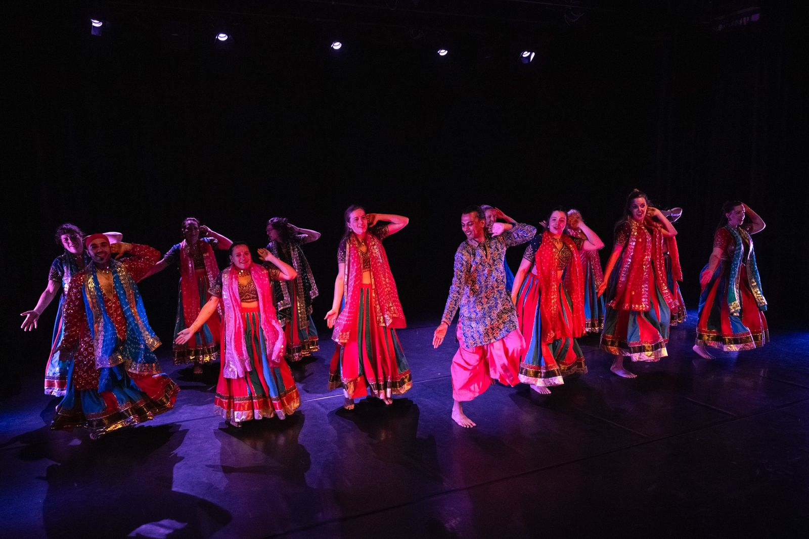
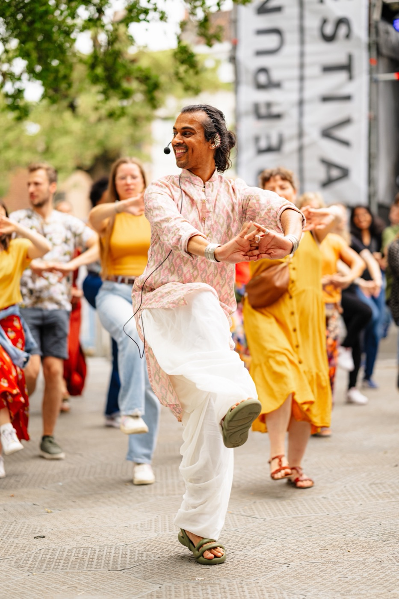
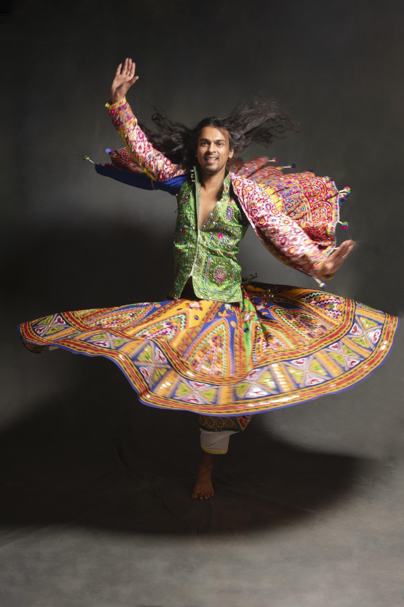
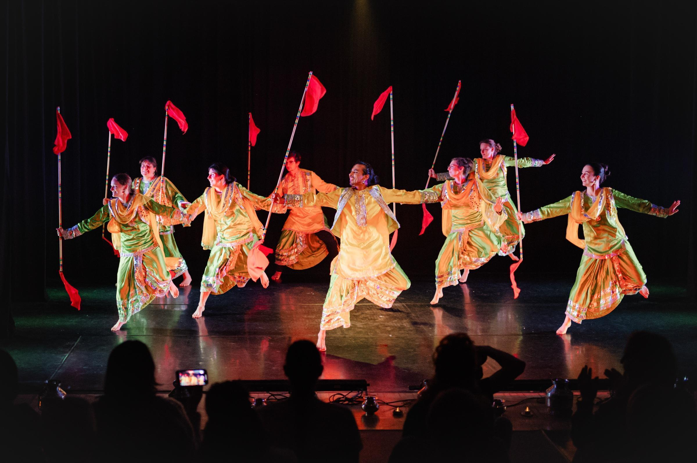
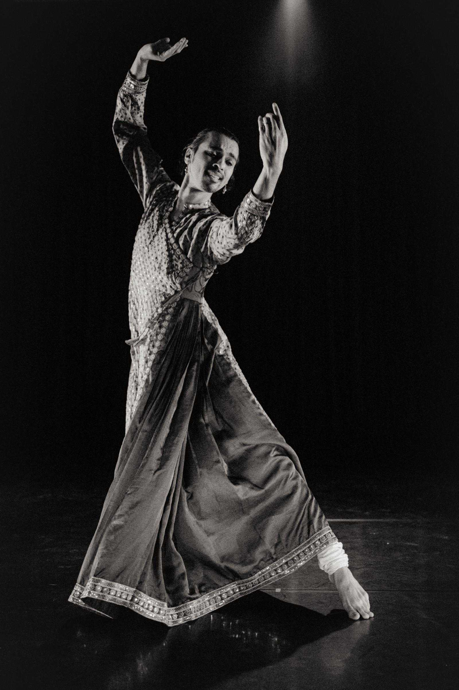
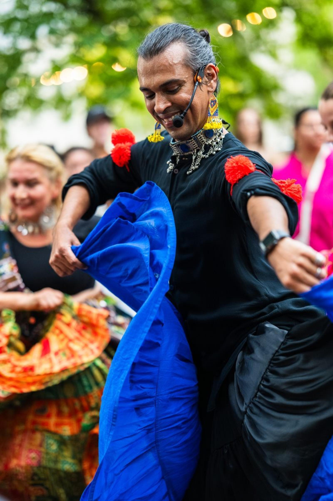
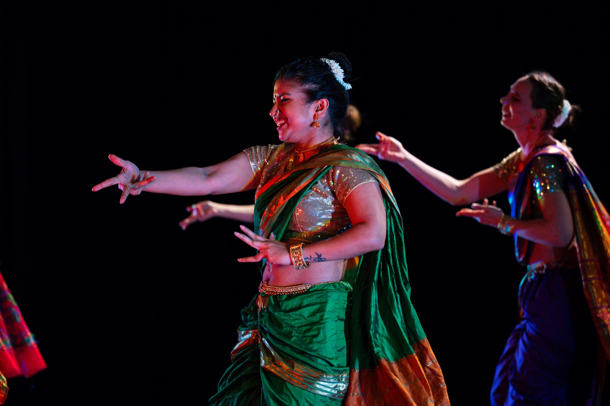

From curious to on stage
No experience needed; everybody is welcome. Here’s the path our dancers actually take — start wherever fits.
Free online course
10 video lessons. Learn the basics at home — no signup, no cost.
Free trial week
Every semester opens with a free trial week in Ghent. Walk in, try anything.
Weekly classes
Bollywood, Bollyfolk, Garba and semi-classical — a home base at Shoonya Dance Centre.
Starter series
Four-week beginner blocks (Bhangra and semi-classical start 16 September).
Workshops & intensives
Weekend deep-dives and summer intensives, in Ghent and across Europe.
Perform
Class groups take the stage — at showcases and the Gent India Dans Festival.
Find your rhythm







Gujarat’s circling festival dance — hypnotic patterns, dandiya sticks, and the soul of our Navratri nights.
Details when you need them
Weekly classes in Ghent
Indian Dance Classes in Ghent — with Swapnil Dagliya
Swapnil Dagliya — Artistic Director of ABC a bollywood company, trained at Broadway Dance Center (New York) and Opus Ballet (Florence) — teaches 10 weekly Indian dance classes at Shoonya Dance Centre in Ghent. Bollywood, Bhangra, Bollyfolk, Garba, Semi-Classical, Indian Technique, and Yoga. Semester: Sep 2026 – Jan 2027.
Find your class
Which class is
right for me?

I'm a total beginner and just want to have fun.
Start with Bollyfolk (Wed) or Yoga — no experience needed, all levels welcome.

I want a massive cardio workout.
You'll love Bhangra — high-energy, full-body, loud. Bollyfolk (Wed) is a great entry point first.

I love the drama and expressions of Bollywood films.
Bollywood is your match — expressive choreography, personality, and performance energy.

I want to improve my balance, spins, and grace.
Join Indian Semi-Classical or Indian Dance Technique — both focus on precision and control.
Enrollment opens twice a year. Your first week is always free.
The fall semester runs from 14 September 2026 to 30 January 2027, with breaks for autumn (1–8 Nov) and winter holidays (20 Dec – 10 Jan).
Free trial week: 14–19 September 2026. Attend any class free, no booking needed. Registration opens at shoonyadance.com.
The spring semester runs from mid-February to mid-June 2027, with a break for Easter holidays. Free trial week in the first week of February.
Registration opens in December 2026.
Between semesters, Swapnil Dagliya hosts multi-day Indian dance intensives at Shoonya Dance Centre. These bootcamps are designed to fast-track technique and act as a bridge into Level 2 or Level 3 classes the following semester.
Dates for the next intensive are announced ahead of each semester. See the calendar →
Swapnil's Classes
Sep 2026 – Jan 2027 · Shoonya Dance Centre, Ghent · Free trial week 14–19 Sep
Tuesday evenings · Shoonya Dance Centre, Ghent · 18:30–21:40

Bollyfolk
Taught by Swapnil Dagliya. One or two regional folk traditions per semester — more complex choreography and a faster pace. This semester: Cheraw (bamboo dance from Mizoram) and Lavani (theatrical folk dance from Maharashtra). Best after a semester of Wednesday Bollyfolk. Age 12+.

Yoga
Iyengar-influenced yoga taught by Swapnil Dagliya, who completed his training in Pune in 2011. Emphasis on alignment, breath, and stillness. Open to all bodies and all levels. Age 16+.
Indian Dance Technique
Taught by Swapnil Dagliya. No choreography — just foundations: alignment, footwork, Kathak turns (chakkars), mudras, and body control. The class that makes every other Indian dance style feel cleaner and stronger. All levels. Age 12+.
Wednesday evenings · Shoonya Dance Centre, Ghent · 18:30–21:45
Bollyfolk
Taught by Swapnil Dagliya. The main entry point into Indian dance at ABC — a different regional folk tradition each semester. This semester: Garba from Gujarat and Khoriya from Haryana. No experience needed. Age 12+.
Bhangra
Taught by Swapnil Dagliya. The harvest dance of Punjab — high-energy, strong shoulder work, big jumps, and the unmistakable lift of the dhol drum. For dancers with an Indian dance foundation or one year of experience. Age 12+.
Indian Semi-Classical
Taught by Swapnil Dagliya. Between Kathak and Bollywood — precise footwork, mudras, and eye expression. For dancers with an Indian dance foundation or two years of experience. Age 12+.
Thursday evenings · Shoonya Dance Centre, Ghent · 18:30–20:30

Bollywood
Taught by Swapnil Dagliya. Expressive choreographies — some lyrical, some high-energy — with a focus on personality and drama. A good fit after a semester of Bollyfolk, or with a general dance background. Age 12+.

Bollywood
Taught by Swapnil Dagliya. Technique-first. Choreographies lean toward semi-classical — clean footwork, strong posture, tight timing. Best for dancers with 3+ years of experience. Top dancers may be invited to join ABC. Age 12+.
Common questions
Questions about
Swapnil's classes
No prior experience is needed for Bollyfolk Open Level (Wednesday 18:30), Yoga, or Indian Dance Technique. For Bollywood, Bhangra, and Indian Semi-Classical Level 2, some prior experience — or a completed Bollyfolk semester — is expected.
Bollyfolk focuses on regional Indian folk traditions — Garba, Bhangra roots, Cheraw, Lavani — with a different style each semester. Bollywood is the dance of Indian cinema, with expressive choreography and emphasis on performance. Most students start with Bollyfolk before moving to Bollywood.
During the first week of the semester (14–19 September 2026), you can attend any of Swapnil's classes for free — no booking needed. Just show up at Shoonya Dance Centre, Stapelplein 41, Ghent.
You need a Shoonya ID first — create one for free at shoonyadance.com. Each person needs their own Shoonya ID. Then use the Register button on any class card above. Registration opens before the semester starts.
The Starter Series is a 4-week introductory block at the start of each semester for people new to Bhangra or Indian Semi-Classical. It runs during the regular Level 2 class slot. No booking needed — just attend the first class of the semester.
60-minute classes cost €173 per semester. Indian Semi-Classical (75 min) costs €202. For registration options and applicable reductions, continue to Shoonya Dance Centre.
The Sep 2026 – Jan 2027 semester runs from 14 September 2026 to 30 January 2027. There are 14 to 16 weekly sessions per class. All classes at Shoonya Dance Centre, Stapelplein 41, 9000 Ghent.
Most classes are open from age 12 and up. Yoga is open from age 16. There is no upper age limit — all bodies and all starting points are welcome in the Open Level classes.
Join my private community list!
I'll notify you first when I host weekend workshops, online classes, and massive outdoor events across Europe.
We respect your privacy.
Online & Worldwide
Can't make it
to Ghent?
Swapnil teaches on YouTube — Bollywood choreographies to learn at home, and Indian folk dance tutorials broken down step by step. Follow the channels and practice from anywhere in the world.
Hire & Collaborate
Bring Swapnil
to you
Swapnil teaches workshops internationally, creates choreographies for stage and screen, and collaborates with companies, festivals, and community organisations. If you have a project in mind — get in touch.
Learn online
1:1 Private Coaching · Online via Zoom · Worldwide
Learn the dance.
Not just the steps.
Swapnil Dagliya · Artistic Director, Shoonya Dance Centre · Ghent
I teach Indian dance the way it deserves to be taught — technique, rhythm, and expression, one-on-one. We build your practice around the style that calls to you. Every session includes a recording, feedback notes, and drills to keep you moving between classes.
What is private Indian dance coaching with Swapnil?
Swapnil Dagliya offers individual, one-on-one Indian dance coaching at Shoonya Dance Centre in Ghent. Sessions are 60 minutes, once a week, and built entirely around your goals, style interest, and starting level. This programme is for private coaching only — there are no group sessions.
Which Indian dance styles can you learn?
Indian Folk
Learn the signature movements of Kalbeliya (the spinning dance of the Kalbelia community of Rajasthan), Ghoomar (Rajasthani courtly circle dance), Bhangra (Punjab's harvest dance), or Garba (Gujarati devotional circle dance). Folk styles are physically direct and rhythmically clear — no prior dance training needed.
Indian Semi-Classical
Technical training rooted in Kathak, the North Indian classical style. You'll develop precise footwork (tatkar), controlled spins (chakkars), expressive hand gestures (mudras), and storytelling through facial expression (abhinaya). Ideal for anyone who wants a structured, technique-first foundation in Indian dance.
Bollywood
Learn Bollywood choreography — shaped by folk, classical and jazz influences— with a strong focus on stage energy and abhinaya (expressive performance). Open to all levels.
How does a session work?
Sessions take place at Shoonya Dance Centre — Stapelplein 41, 9000 Ghent. To build momentum and secure a consistent slot, Swapnil recommends booking on a recurring monthly basis.
Common questions
Questions about
private coaching
Yes, and it works well. All private coaching is via Zoom — 60 minutes, one-on-one. Students join from across Europe, India, the US, and beyond.
I teach what I know deeply — Kalbeliya, Bollywood, Bhangra, Indian Folk and Indian Semi-Classical (see the styles above). We work on whichever style draws you in.
No. I teach complete beginners through advanced dancers — the session adapts entirely to where you are. What I need from you is curiosity and willingness to practise between sessions. That's it.
Group classes at Shoonya follow a fixed semester with a shared curriculum — same pace for everyone. Private coaching is the opposite: your style, your questions, your pace. If you want to spend three sessions on one piece of footwork, we spend three sessions on it. No group to keep up with, no curriculum to follow.
I'm based in Ghent, Belgium (CET/CEST). I teach in the mornings and early afternoons — which works well for Europe, is manageable for India (late afternoon IST), and accessible for the East Coast US (morning ET). Mention your time zone when you fill in the form and we'll find a slot.
Single session: €40 · 60 minutes via Zoom
4-class package: €140 · saves €20 (€35 per class)
Once a week is the sweet spot — enough time between sessions to actually practise the drills, enough repetition for the body to build memory. Twice a month works too if that's your schedule. What doesn't work: erratic sessions with long gaps. Consistency matters more than frequency.
I read every enquiry personally. We'll have a short conversation about what you want to learn, find a time that works, and go from there.
Private Coaching · Online & Ghent
Ready to start dancing?
Fill in the form below and Swapnil will be in touch within 3 working days to discuss your goals and schedule your first session — whether you're in Ghent or anywhere in the world.
€40 per session · €140 for 4 classes · via Zoom
Garba workshops across Europe
Discover Garba
with Swapnil Dagliya
Learn Garba, the vibrant folk dance from Gujarat!
Garba has always been close to home for me. It’s not just a dance—it’s community, celebration, rhythm, and roots. In these workshops, I don’t just teach steps. We learn how Garba feels—the weight of the footwork, the pulse of the dhol, the simplicity of a dodhiyu done well. Whether we're dancing in Belgium or Frankfurt, the energy stays the same: raw, joyful, and real.
What is Garba? Garba is a traditional folk dance from Gujarat, India, performed especially during the nine-night Hindu festival of Navratri. The name “Garba” comes from the Sanskrit word Garbha, meaning “womb,” symbolizing life’s cycle and creation.
The dance is done in a circle around a central lamp or an image of Goddess Durga, reflecting the rhythm of life, time, and the universe. Dancers move in coordinated steps to the beat of traditional music played on instruments like the dhol, tabla, and harmonium.
Garba is full of energy, color, and celebration. Women wear vibrant chaniya cholis (long skirts and blouses), while men dress in kediyu and dhoti (traditional tunics and pants). More than just a dance, Garba brings people together, creating joy, unity, and a deep spiritual connection.
Today, Garba is celebrated worldwide, sharing the vibrant spirit of Indian culture with communities everywhere.
Workshop Highlights:
In my Garba workshops, you’ll learn the fundamentals of this energetic and joyful dance, focusing on what makes Garba truly special:
Core Steps: Learn the heartbeat steps of Garba:
Tran Taali — the signature 3-clap rhythm, plus fresh variations to give your dancing personality.
Heench — the graceful side step with hip and arm styling, along with creative new ways to perform it.
6-step Dodhiyu — the lively movement that keeps the circle flowing.
Variations & Flow (Next 90 minutes)
8 step & 12-step Dodhiyu and playful variations to keep your dancing fresh.
Spin technique for smooth, balanced turns.
Barrels and traveling turns to add dynamic flair.
Community & Joy: Garba is about dancing together and sharing the vibrant spirit of the dance. Feel the uplifting energy as you connect and celebrate with others.
Your questions answered
About Garba Workshops
I teach Garba workshops across Europe — in Belgium, the Netherlands, Germany, France, and beyond. My home base is Ghent, Belgium, where I teach regularly at Shoonya Dance Centre. I also travel for workshops and can be booked in your city. Visit the Let's Work Together page to discuss a workshop near you.
No experience needed. My workshops are designed for complete beginners and experienced dancers alike. We start from the ground up — footwork, rhythm, the feel of the circle — so everyone finds their footing from the first session. If you've danced before, you'll go deeper faster. If you haven't, you'll be surprised how quickly Garba clicks.
Garba is for any time of year. Navratri is the most celebrated occasion — nine nights of dancing — but the dance itself belongs to every season. I run workshops across Europe throughout the year, in dance studios, cultural events, and festivals. You don't need to wait for October to start.
Most workshops run 2 to 3 hours. A shorter session covers the foundations — footwork, clap patterns, basic steps. A longer session adds variations, spins, and flow. For intensive weekends or multi-day workshops, we go much deeper into style, musicality, and choreography.
Yes — I regularly travel across Europe for workshops and am available for bookings in Belgium and internationally. Studios, cultural centres, festivals, and private events are all possible. Use the Let's Work Together page to get in touch with your location, date, and group size.
Free Bollywood course
Learn to dance Bollywood
Always wanted to learn to dance Bollywood but never knew where to start? OR were you too shy to try out the steps in front of other people? Here's a quick fix to all your problems. In this course we have put together 10 basic Bollywood dance steps that you can dance on any Bollywood music in the comforts of your own home. These moves are suitable for beginners but anyone can use them in their choreography.
Not sure? Start free.
The online course costs nothing and the trial week costs nothing. The only risk is that it becomes your thing.